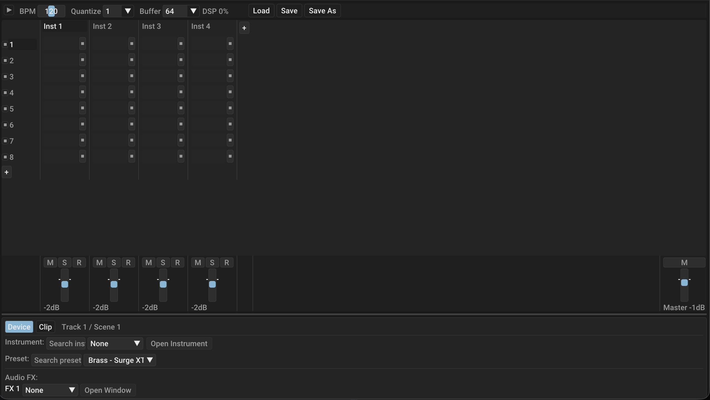

⚡
Ridiculously low latency
A lock-free, allocation-free audio engine keeps the signal path tight so playing feels immediate — even on modest hardware.
Free & open source · macOS & Linux
Flux is a modern digital audio workstation built from the metal up for low-latency performance. Record, sequence, and mix with built-in instruments, real CLAP plugins, and a project format that isn’t locked to one vendor.

A complete workstation — not a demo. Built in Zig for speed you can feel.
A lock-free, allocation-free audio engine keeps the signal path tight so playing feels immediate — even on modest hardware.
Host the modern, open CLAP plugin standard. Load your favourite synths and effects with sample-accurate automation.
Capture performances with a built-in metronome and tight clip recording, then arrange them on a clean timeline.
Ship-ready EQ, compressor, limiter and noise gate are included — mix and master without hunting for a single plugin.
Projects are saved as .dawproject — an open interchange format. Move your work to Bitwig and back without conversion.
Fully open source. No accounts, no cloud requirement, no telemetry, no rug-pull. What you download is what you run.
Sound on board
Open a fresh project and start making noise. Flux ships with a built-in synthesizer and a full processing chain, so your first idea never has to wait on a download.
Free, forever. Pick your platform and start making music.
Apple Silicon (M1–M4)
Download →x86_64 · CLAP + standalone
Download →Windows & everything else
zig build →Looking for a specific version? Browse all releases. Every build is produced automatically from source on Codeberg CI.